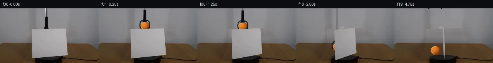

![首帧]()

Round 00
2026-11-04T19:23:10.559369+00:00像素候选变化代码 +306/−0inspection 更新
pixels 9450e2f7e1711f31 · code e39251cbf5986c55
查看本轮 generate.py 真实 diff
--- previous/generate.py
+++ current/generate.py
@@ -0,0 +1,306 @@
+"""Reference-pixel compositing with local reconstruction and analytic objects.
+No model, network, external renderer, or output image viewing is used.
+"""
+from pathlib import Path
+import json
+import math
+import numpy as np
+import cv2
+from PIL import Image, ImageDraw, ImageFilter
+from scipy.ndimage import gaussian_filter
+from artifact_io import save
+
+ROOT = Path(__file__).resolve().parent
+S = 4
+W, H = 256, 144
+SW, SH = W*S, H*S
+src = np.array(Image.open(ROOT/'first_frame.png').convert('RGB'))
+rng = np.random.default_rng(71)
+quad0 = np.float32([[82,55],[171,53],[176,123],[84,131]])
+yy, xx = np.mgrid[:H,:W].astype(float)
+Y, X = np.mgrid[:SH,:SW].astype(np.float32)
+X = (X+.5)/S-.5
+Y = (Y+.5)/S-.5
+
+def up(a):
+ return cv2.resize(a, (SW,SH), interpolation=cv2.INTER_CUBIC).astype(np.float32)
+
+def blend(dst, color, alpha):
+ alpha = np.clip(alpha,0,1)
+ if alpha.ndim == 2: alpha=alpha[...,None]
+ return dst*(1-alpha)+np.asarray(color)*alpha
+
+def polygon_mask(points):
+ p=Image.new('L',(SW,SH),0)
+ ImageDraw.Draw(p).polygon([(float(x*S),float(y*S)) for x,y in points],fill=255)
+ return np.asarray(p,dtype=np.float32)/255
+
+# Numerically reconstructed background, restricted to the original moving objects.
+cardmask=np.zeros((H,W),np.uint8)
+cv2.fillConvexPoly(cardmask,quad0.astype(np.int32),255)
+cardmask=cv2.dilate(cardmask,np.ones((3,3),np.uint8),iterations=1)
+# Rowwise continuation uses visible pixels on either side of the occluded region.
+bg=src.astype(float).copy()
+for y in range(52,133):
+ xs=np.where(cardmask[y]>0)[0]
+ if not len(xs): continue
+ xl,xr=int(xs[0]),int(xs[-1])
+ if y<=91:
+ left=np.median(src[y,max(0,xl-12):xl-3],axis=0)
+ right=np.median(src[y,xr+3:min(W,xr+13)],axis=0)
+ for x in xs:
+ a=(x-xl+2)/(xr-xl+4)
+ c=left*(1-a)+right*a
+ c+=.65*math.sin(x*.46+y*1.23)+.28*math.sin(x*1.7-y*.71)
+ bg[y,x]=c
+ else:
+ # Clone real wood detail from unoccluded table regions, with smooth joins.
+ left=np.median(src[y,62:79],axis=0)
+ right=np.median(src[y,182:208],axis=0)
+ for x in xs:
+ a=(x-xl+2)/(xr-xl+4)
+ sx=183+int((x-xl)*.46)%32
+ tx=48+int((x-xl)*.35)%31
+ detail=(src[y,sx].astype(float)-right)*a+(src[y,tx].astype(float)-left)*(1-a)
+ c=left*(1-a)+right*a+.50*detail
+ grain=1.15*math.sin((x+.65*(y-92))*.63)+.60*math.sin((x+.65*(y-92))*2.3)
+ bg[y,x]=c+grain
+# Reconstruct only the tiny part of the platform formerly covered by the card.
+q=((xx-126)/36.8)**2+((yy-128.0)/6.1)**2
+ellipse=np.clip((1-q)*5,0,1)*(cardmask/255)
+platform=np.zeros_like(bg)+np.array([29,28,28])
+platform+=np.clip(1-q,0,1)[...,None]*np.array([4,4,5])
+platform+=np.sin(xx*.8+yy*.9)[...,None]*.65
+bg=blend(bg,platform,ellipse)
+# Shaft/handle hole: cv2 inpainting is confined to the narrow original tool area.
+toolmask=np.zeros((H,W),np.uint8)
+cv2.fillPoly(toolmask,[np.int32([[116,0],[124,0],[125,45],[129,53],[112,54],[115,44]])],255)
+wallfixed=cv2.inpaint(src,toolmask,5,cv2.INPAINT_TELEA)
+# The original card takes priority in the overlap at y=53..54.
+region=(toolmask>0)&(cardmask==0)
+bg[region]=wallfixed[region]
+bg=np.clip(bg,0,255).astype(np.uint8)
+base=up(bg)
+
+# Rectify the actual card texture; use interior sample coordinates to avoid dark rim pixels.
+TW,TH=360,300
+rect=np.float32([[0,0],[TW-1,0],[TW-1,TH-1],[0,TH-1]])
… diff truncated; 219 more lines …